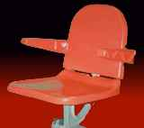
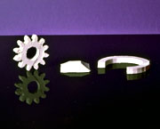

|
|
|
| Home | Previous Page | Next Page
|
Autofabrication Technologies > Deposition > Extruding:
Not: Þemadaki baþlýklarý týklayarak, direkt açýklama sayfalarýný görebilirsiniz.
Sývý veya macun kývamýnda
olan yapý malzemesinin bir memeden sýkma yöntemiyle (extrusion)
çýkarýlýp gerekli noktalara sývanmasý. Bu, kremanýn bir
tüpten sýkýlarak pasta üzerine kabartma þekiller oluþturulmasýna
benzetilebilir.
|
1988 yýlýnda, küçük çocuðunun
renkli macunlarla oynamasýndan aldýðý ilhamla geliþtirdiði
FDM teknolojisini sanayide uygulamak için Scott Crump
tarafýndan kurulan Stratasys firmasý, 1991 yýlýnda ilk
ticari cihazýný üretmiþtir.
Solda, Crump
tarafýndan alýnan ilk patentin bir çizimi görülmektedir.
9 Haziran 1992 tarihli, 5,121,329 no'lu ve "Apparatus
and method for creating three-dimensional objects" baþlýklý
bu patent için Crump, 30 Ekim 1989 tarihinde baþvurusunu
yapmýþtýr.
Saðda: Stratasys/FDM
(Fused Deposition Modeling - Eriyik Yýðarak Modelleme) tekniðinde, ince uçlu bir
memeden erimiþ plastik malzeme sýkýlýp (extrusion) yüzeye
ince bir tabaka halinde sývanarak katmanlar oluþturulur.
Katman oluþturulduktan sonra tabla, katman kalýnlýðý
kadar aþaðý iner ve bir sonraki katmanýn inþasýna baþlanýr.
Ýnþa hammadesi, makaraya
sarýlmýþ olarak ince plastik tel halinde cihaza beslenir.
Bir dizi kontrollü tahrik düzeneði ile memeye beslenen
tel, memeye ulaþtýðýnda sýcaklýkla eritilerek sývýlaþtýrýlýr.
Bu yöntemde, hassas döküm mumu ve polyamidin yanýsýra
ABS gibi erime sýcaklýðý yüksek mühendislik plastikleri
de rahatlýkla inþa malzemesi olarak kullanýlabilir.
Destek Yapýlarý:
Ýlk FDM modellerinde inþa ve destek amacýyla ayný
malzeme kullanýlýyor ve inþa sonrasý bu yapý manuel
olarak kýrýlarak alýnýyordu. Sonraki modellere ise farklý
bir destek malzemesi kullanabilmek amacýyla ikinci bir
meme ilave edilerek daha kolay ayýrma iþlemi için iki
farklý malzeme geliþtirilmiþtir (saðda en alttaki resim):
1- BASS (Break Away Support System, Kolay kýrýlabilir
destek sistemi): Bu destek mazlemesi, inþa sonrasýnda
manuel olarak kolayca ayrýlabilecek bir kimyasal yapýya
sahiptir (inþa malzemesine kuvvetli yapýþmaz).
2- "Water Works"
isimli bir destek malzemesi, su tabanlý bir sývý içinde
bir süre bekletilip çözülerek (manuel olarak ulaþýlmasý
zor veya imkansýz) dar aralýklardan kolayca çýkarýlabilir.
Ayrýþmanýn daha kolay ve hýzlý olmasý için çözme iþlemi
ultrasonik titreþimli bir tankýn içinde yapýlýr. Bu
sayede, çok parçalý ve haraketli mekanizmalar da dahil
birçok karmaþýk parçanýn imalatý mümkün olabilmektedir.
Örnek için aþaðýdaki 12 diþliden oluþan mekanizma resmine
bakýnýz.
Video Klip:
Bir uçak modelinin FDM
cihazýnda inþasýný gösteren Stratasys firmasý tarafýndan
hazýrlanmýþ 1 dakika 39 saniye süren video
klipi saðdaki resmi klikleyerek izleyebilrisiniz.
(5,5MB boyutunda .wmv dosyasý) |
Modeller:
Prodigy
Plus:
Prodigy, Temmuz 2000'de Piyasaya sürülmüþtür. FDM
teknolojisi ve ABS inþa mazlemesi kullanýr. Ofis ortamýnda
konsept modelleme pazarýný hedefler.
Ýnþa zarfý: 203 x 203 x 305 mm,
Ýhtiyaca göre Ýnþa sýrasýnda 3 farklý katman kalýnlýðý
seçilebilir: 0.178 (Fine/hassas), 0.245 mm (Standart
), 0.33 mm (Draft/kaba)
Destek Yapýsý: . BASS (Break Away Support System)
ile farklý bir malzemden manuel olarak kýrýlarak kolay
ayrýlabilir destek kullanýlýr.
7 Mart 2002 tarihinde Prodigy Plus modeli piyasaya
sürülmüþtür. Bu model, WaterWorks isimli suda eriyebilen
destek mazlemesi kullanýr. Önceki model Prodigy ise
artýk üretimden kalkmýþtýr.
FDM
3000:
2000
yýlýnda piyasada olan bu
cihaz þu özelliklere sahiptir.
Ýnþa zarfý: 254 x 254 x 406 mm
Ýnþa hassasiyeti: ± .127 mm
Ýnþa malzemeleri: ABS (Beyaz), ABSi, hassas döküm
mumu, elastomer
Yol geniþliði: 0.250 - 0.965 mm (yazýlým ile seçilebilir)
Katman kalýnlýðý: 0.178 - 0.356 mm (yazýlým ile seçilebilir)
Destek yapýsý: WaterWorks veya BASS (yazýlým ile seçilebilir)
FDM
Maxum:
Önceki
sistemlerden %50 daha hýzlýdýr.
Ýnþa
zarfý: 600 x 500 x 600 mm
Ýnþa hassasiyeti (127mm boya kadar): ± .127 mm
Ýnþa hassasiyeti (127mm den büyük parçalar için):
± .0015 mm/mm
Ýnþa malzemesi: ABS (Beyaz)
Yol geniþliði: 0.305 - 0.965 mm (yazýlým ile seçilebilir)
Katman kalýnlýðý: 0.127* - 0.250 mm (yazýlým ile seçilebilir)
Destek yapýsý: WaterWorks
*1
Mart 2002'da yapýlan bir duyuru ile, Fuji Photo Film
Co., Ltd., Tokyo ile 11 aylýk yürütülen ortak bir
çalýþma sonrasýnda FDM Maxum.T modellerinde ABS malzeme
kullanýmý sýrasýndaki üretim hassasiyetinin arttýrýldýðý
belirtilmiþtir. Buna göre artýk minimum katman
kalýnlýðý 0.178
yerine 0.127mm
olarak üretilebilecek ve bu sayede 0.508mm'lik detaya
sahip küçük prototipler baþarýyla üretilebilecektir.
Fuji Photo Film Co., Ltd., FDM Maxum kullanarak küçük
boyutlu cep fotoðraf makinesi prototip üretimini daha
hassas yapma ihtiyacý üzerine bu teknolojiyi geliþtirmiþtir.
Nisan 2002'den itibaren daha önce üretilmiþ Maxum
cihazlarýna da bu teknoloji "upgrade" olarak
eklenmeye baþlanacaktýr.
FDM
Titan:
Ýnþa zarfý: 355 x 406 x 406 mm
Ýnþa hassasiyeti (127mm boya kadar): ± .127 mm
Ýnþa hassasiyeti (127mm den büyük parçalar için):
± .0015 mm/mm
Ýnþa malzemeleri: ABS*, Polycarbonate, Polyphenylsulfone
Katman kalýnlýðý: 0.25 mm
*Stratasys
9 Ocak 2002'de FDM Titan modellerinde yapýlacak bir
terfi (upgrade) ile PC (Polikarbonat, polycarbonate)
malzemeye ek olarak artýk ABS de kullanýlabileceðini
duyurmuþtur.
FDM
VantageT:
Ýnþa zarfý: 355.6 x 254 x 254 mm
Ýnþa malzemeleri: ABS, Polycarbonate (PC)
Katman kalýnlýðý: 0.178-0.254 mm (PC), 0.254 mm (ABS)
Destek yapýsý: WaterWorks
23 Haziran 2003 tarihinde duyurulan
bu cihaz FDM Titan ile ayný plaformu kullanmaktadýr:
Aþaðýdaki
tabloda, 2004 yýlý baþýnda daha yüksek hýz, hassasiyet
ve inþa kapasitesine sahip olarak üretilen yeni Vantage
modellerine ait teknik bilgi karþýlaþtýrmalý olarak
verilmiþtir:
|
Vantage
i |
Vantage
s |
Vantage
se |
| Ýnþa
zarfý |
355
x 254 x 254 mm |
355 x 254 x 254 mm |
406
x 355 x 406 mm |
| Ýnþa
malzemesi |
ABS
veya Polycarbonate (PC) |
| Katman
kalýnlýðý |
ABS:
0.127 mm, 0.178 mm, 0.254 mm
Polycarbonate (PC): 0.178 mm, 0.254 mm |
| Hassasiyet
|
127
mm boya kadar olan modeller +/- 0.127 mm hassasiyetle
üretilebilir. 127mm'den daha büyük boyutlar için
hassasiyet +/- 0.0381 mm/mm'dir |
| Destek
malzemesi |
ABS
için WaterWorks, Polycarbonate için BASS breakaway |
|
Dimension
3D Printer:
Stratasys, 19 Þubat 2002 tarihinde, FDM teknolojisi kullanan
Prodigy'nin yeni bir versiyonunu Dimension 3D Printer
markasý altýnda piyasaya sürdü. Bununla birlikte ucuz
ve küçük, ofis uyumlu konsept modelleme hedefli Genisys
modeli piyasadan çekildi. 29.900USD fiyatla üretildiði
tarih itibarýyla benzerlerinin en ucuzu olan Dimension
3D Printer, 0.254mm ile 0.33mm arasýnda deðiþtirilebilen
kalýnlýklardaki katmanlarý 0.3mm çapýnda bir memeden ABS
plastik malzemeyi sývayarak inþa ediyor. Destekleme için
ikinci bir malzeme kullanan bu cihazla inþa sonrasýnda
destekler manuel olarak kýrýlarak daha kolay temizleniyor
(BASS). 203 x 203 x 305 mm ölçülerinde bir inþa zarfýna
sahip bu cihaz hakkýnda detaylý bilgiye www.dimensionprinting.com
adresinden ulaþýlabilir. Dimension 3D Printer, 1995 yýlýnda
35.000USD fiyattan piyasaya sürülerek zamanýnýn en ucuz
makinesi olan BPM
ile benzer bir pazarý hedeflemektedir.
Ýlgili Video (Dimension BST):
www.youtube.com/watch?v=W8BmJWt4WIs |
Önceki
Modeller:
Ýlk
üretilen model FDM 1600 idi. Mart 1996'da piyasaya sürülen
FDM 1650 ise FDM 1600'de 3 kat daha hýzlýydý.
Mart
1996'da FDM 8000 ve Genisys Xs
modeleri de piyasaya sürülmüþtür. Saðda görülen
FDM 8000, 457 x 457 x 609 mm inþa zarfýna sahipti ve
BASS destek yapýsýyla ABS inþa malzemesini kullanýyordu.
FDM 1600'e kýyasla 6 kat hýza sahip FDM 8000 ayný zamanda
0.250 - 0.965 mm arasýnda ayarlý yol geniþliðine ve
0.178 - 0.356 mm aralýðýnda seçilebilen katman kalýnlýðýna
sahipti.
12 Mart 1997'de FDM 2000 modeli piyasaya sürülmüþtür.
FDM 2000 þu özellikler sahiptir: Ýnþa zafý: 254 x 254
x 254 mm, Hassasiyet: ± 0.127mm, Ýnþa malzemeleri: ABS
ve hassas döküm mumu.
2002 itibarý ile FDM 1600, FDM 1650, FDM 2000 serisi
yerine FDM 3000 geçmiþtir. FDM 8000 ve Genisy Xs modelleri
ise üretimden kalkmýþtýr.
FDM
Quantum: MagnaDrive (TM) markalý lineer tahrik teknolojisi
ilk defa Ocak 1998'de piyasaya sürülen FDM Quantum modelinde
kullanýlmýþtýr. Stratasys tarafýndan patentli bu teknikte
ekstrüsyon kafasý x-y eksenlerinde sadece manyetik kuvvetlerle
hareket ettrilir; herhangi bir elektrik motoru ve eksen
klavuzlarý veya ray kullanýlmaz. Bu sayede önceki sistemlere
kýyasla 2.5-5 kat arasýnda daha yüksek inþa hýzýna ulaþýlmýþtýr.
Bu model 600 x 500 x 600mm inþa zarfýna sahipti. 2001
yýlýnda FDM Quantum geliþtirilerek (upgrade) FDM
Maxum modeli üretilmiþtir.
Genisys
Xs, masaüstü 3D yazýcý:
Solda görülen masaüstü (desktop) boyutlarýndaki
Genisys Xs cihazý polyester malzemeden kavramsal
(conceptual) model imalatý için tasarlanmýþtýr. Mart
1996 tarihinde, en ucuz olmayý hedefleyerek 55.000USD
fiyattan piyasaya sürülen, inþa malzemesi olarak polyester
kullanan, 305x203x203mm ebadýnda inþa zarfýna ve ± 0.356mm
inþa hassasiyetine sahip bu cihaz, orijinal olarak IBM
firmasýnýn geliþtirdiði ve sonra Stratasys firmasýna
sattýðý patentli bir teknolojiye dayanmaktadýr. Bu teknolojinin
çalýþma prensibi orijinal FDM ile çok benzerlik göstermektedir;
Destekleme için ayný inþa malzemesi kullanýlýr, yalnýz
inþa hammaddesi tel olarak deðil, blok olarak yüklenir
ve eritilerek sývama memesine bir hortum ve pompa ile
iletilir. Bu sayede tel haline getirilemeyecek kadar
yumuþak (çukulata gibi) hammaddeler de kullanýlabilir.
Saðda, bu cihazla inþa edilmiþ çeþitli modeller
görülmektedir.
Genisys Xs Þubat 2002 yýlýnda, benzer pazarý hedefleyen
Dimension modelinin piyasaya
çýkmasýyla birlikte üretimden kaldýrýlmýþtýr.
|
Uygulama Örnekleri:
 
|
Solda: Çeþitli
parçalar. Ortada: Ergonomi testleri için inþa edilmiþ
bir sandalye, bir insanýn yükünü kaldýrabilecek kadar
mukavimdir. Saðda: FDM Teknolojisi ile hassas döküm
mumu (wax) kullanýlarak üretilmiþ ince cidarlý bir þiþe.
Böyle bir þiþenin talaþlý imalatla tek parça halinde imal
edilmesi imkansýzdýr.
|
Solda,
FDM Titan ile üretilmiþ bir elektrikli el testeresi
prototipi,
Saðda ise
FDM Maxum ile inþa edilmiþ bir taþýt diferansiyel
gövdesi modeli görülmektedir.
|
|
Saðda: Daha önceki
sayfalarda Cubital
tarafýndan üretilmiþ modeli gösterilen bu diþli mekanizmasý,
WaterWorks teknolojisi sayesinde yýllar sonra Stratasys
tarafýndan da üretilebilmiþtir.
|
 Solda:
Öndeki çelik plastik enjeksiyon kalýbý, arkadaki mum numune
kullanýlarak hassas dökümle imal edilmiþtir. Mum model
ise FDM ile inþa edilmiþtir. Saðda: FDM Maxum ile
inþa edilmiþ fonksiyonel bir bisiklet prototipi. Solda:
Öndeki çelik plastik enjeksiyon kalýbý, arkadaki mum numune
kullanýlarak hassas dökümle imal edilmiþtir. Mum model
ise FDM ile inþa edilmiþtir. Saðda: FDM Maxum ile
inþa edilmiþ fonksiyonel bir bisiklet prototipi. |
Malzeme
araþtýrmalarý:
Bu
seramik parçalar FDM teknolojisi yardýmý ile imal edilmiþtir.
Sýkma sýrasýnda kullanýlan polimere seramik tozu yüklenmiþ
ve parça daha sonra fýrýnda yüksek sýcaklýkta sinterlenerek
tam yoðunluða ulaþmýþtýr. Fýrýnlama sýrasýnda geçici yapýþtýrma
amacýyla kullanýlan polimer buharlaþmýþtýr. Seramik veya
metal tozu karýþtýrýlmýþ malzemelerin FDM tekniðine uyarlanmasý
konusunda dünyanýn çeþitli üniversite va araþtýrma kurumlarýnda
çalýþmalara devam edilmektedir. |
|
|
|
Bilgisayar
destekli doku mühendisliði konusunda çözümler sunan
Bioplotter (biyolojik-çizici) 1999 yýlýnda Freiburg
Materials Research Centre (Freiburg Malzeme Araþtýrma
Merkezi) tarafýndan bulunmuþtur.
Bu yöntemde bir þýrýnga
içine konan inþa malzemesi 80 mikron kadar dar olabilen
bir iðne ile inþa yüzeyine enjekte edilir.
Bu teknolojinin diðer
bütün autofabrication teknolojilerine kýyasla önemli bir farký,
destek malzemesi olarak sývý bir ortam kullanmasýdýr.
Ortam sývýsý, kullanýlan inþa malzemesi ile ayný özgül
kütleye sahip olacak þekilde seçilmiþtir. Bu sayede
enjekte edilen inþa malzemesi üzerindeki yerçekimi kuvveti,
ortamdaki sývýnýn kaldýrma kuvveti ile dengelenir. Bu
özellik, doku mühendisliði uygulamalarýný kolaylaþtýrmaktadýr.
Ýnþa malzemesinin sertleþmesi
soðuma, sývýdan katýya faz deðiþtirme, ýsýnma veya kimyasal
reaksiyonla olabilir.
 Ýnþa
malzemesi olarak termoplastik polimerler, reaktif reçineler
(silikon reçine gibi), fibrin ve jelatin içeren hidrojeller
kullanýlabilir. Saðda, Bioplotter ile inþa edilmiþ
bir burun parçasý görülmektedir. Bu model gözenekli
3D bir dokuma (örgü) yapýsýndadýr ve aradaki boþluklar
ve malzemenin biyolojik uygunluðu sayesinde uygun ortamda
içerisinde hücre büyümesi saðlanýr... Ýnþa
malzemesi olarak termoplastik polimerler, reaktif reçineler
(silikon reçine gibi), fibrin ve jelatin içeren hidrojeller
kullanýlabilir. Saðda, Bioplotter ile inþa edilmiþ
bir burun parçasý görülmektedir. Bu model gözenekli
3D bir dokuma (örgü) yapýsýndadýr ve aradaki boþluklar
ve malzemenin biyolojik uygunluðu sayesinde uygun ortamda
içerisinde hücre büyümesi saðlanýr...
Laminar akým teknolojisi
ve kullanýlan UV ampüller ile steril bir ortamda inþa
gerçekleþtirilebilir. Bu sayede canlý hücreler de
inþa malzemesinin içinde beraber kullanýlabilir (fibrin
gibi).
Ýnþa sýrasýnda þýrýnga
kartuþu 230°C, inþa platformu ise 100°C sýcaklýkta muhafaza
edilir.
Ýnþa edilecek parçanýn
CAD verisine baðlý makine ve proses kontrlolü özel bir
2½D CAD/CAM programý ile yapýlmaktadýr.
Haziran
2003'de ilk sistem satýþý gerçekleþmiþtir. Biri
Feiburg Üniv.'sinde olmak üzere iki sistem araþtýrma
amacýyla endüstride kullanýlmaktadýr. 2-3 araþtýrma
merkezi daha 2003'ün 3. çeyreðinde modifiye edilmiþ
bir Bioplotter versiyonu kullanmaya baþlayacaklardýr.
Medikal Uygulamalar
> Suni Doku Ýmalatý
> Bioplotter
Iþýkla Kür > Maskeleyerek
> Envisiontec
GmbH
|
| Home | Previous Page | Next Page
| |
|